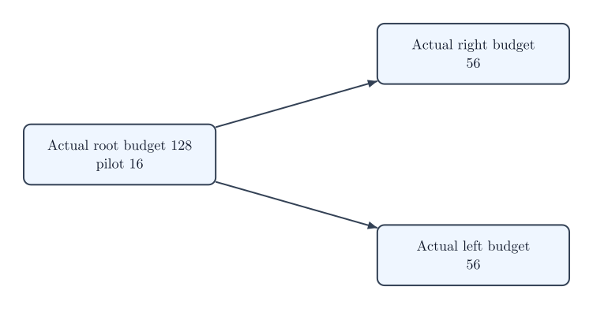
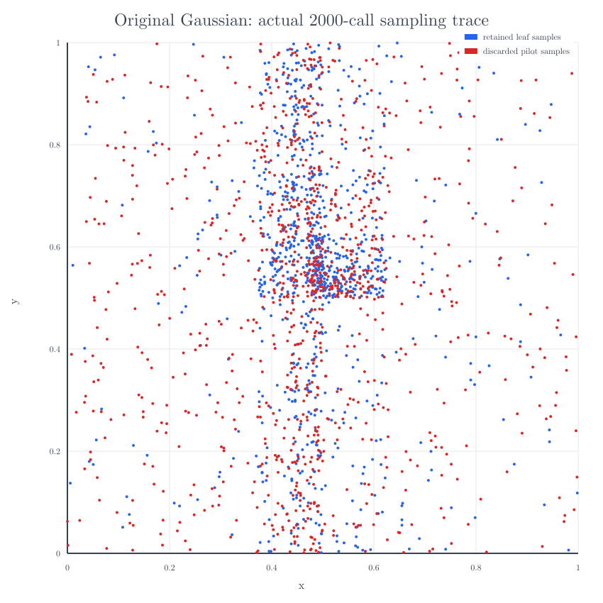
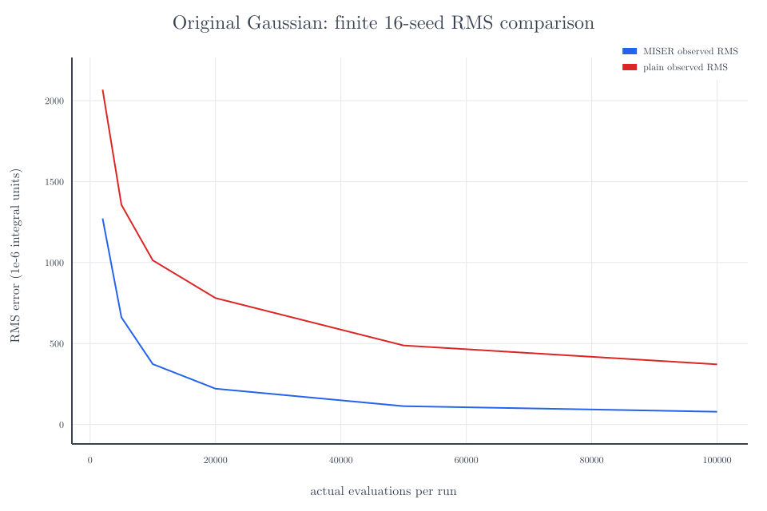
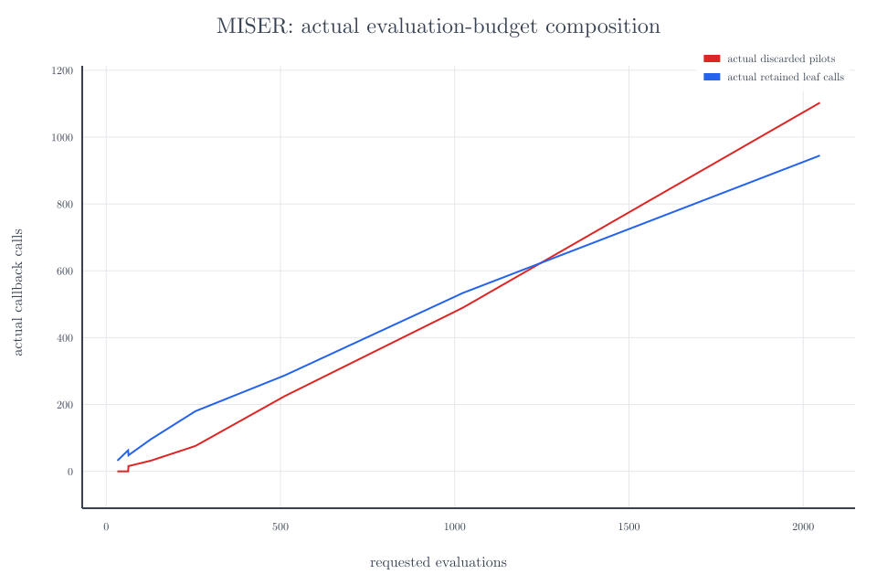

MISER integration
Abstract
Estimate an integral over a finite box when exact integration is unavailable or expensive. Recursive stratified sampling uses pilot observations to decide where to split and how to distribute later evaluations. We inspect the actual sample accounting, retain the original narrow Gaussian and sixteen-seed comparison, and distinguish observed accuracy from a universal improvement or error-rate guarantee.
Derive the allocation objective
Split a region into equal-volume halves, with volume V/2 each and within-half integrand standard deviations sigmaL and sigmaR. Independent sample means based on nL and nR observations have combined variance
For fixed nL+nR=N, differentiation gives nL/nR=sigmaL/sigmaR. The ideal minimum is V squared times(sigmaL+sigmaR) squared divided by4N, motivating the split axis with the smallest estimated sum of half-region standard deviations. Unknown deviations require pilots; finite pilot noise, minimum allocations, rounding and discarded pilot cost all separate the implementation from this ideal calculation. It does not prove faster asymptotic convergence than ordinary Monte Carlo.
The native variant uses10percent pilots, at least16 observations, whenever a region budget is at least64. It discards those observations from the final estimator, allocates the remainder proportionally, then recurses. Budgets below64 use plain leaves. The legacy32-observation allocation clamps are retained, so small split budgets64..79 can produce one leaf smaller than32. Successful execution nevertheless makes exactly the requested number of callbacks, with every leaf having at least two.
A constant integrand and an actual split
Integrating the constant2 over[0,1] gives2 exactly and zero plug-in variance. With128 calls, the actual root pilot uses16 and both children receive56. The diagram reads those actual allocations. All128 samples are stored with their true pilot/leaf labels; no report-side simulation is needed.
#include <dm/dm.hpp>
int main() {
std::filesystem::create_directories("build");
auto t = dm::algorithms::miser_trace([](const auto &) {
return 2.;
}, {0}, {1}, 128);
auto &n = t.nodes.front();
dm::graphics::Diagram d;
d.node("root", {0, 0},
std::format("Actual root budget {}\npilot {}", n.calls, n.pilot_calls)).node("left", {7, -2}, std::format("Actual left budget\n{}", n.left_calls)).node("right", {7, 2}, std::format("Actual right budget\n{}", n.right_calls)).edge("root", "left").edge("root", "right");
std::print("Actual estimate: {}, native variance: {}, evaluations: {}.\n\n| node | calls | pilot calls " "| left calls | right calls | returned integral |\n| ---: | ---: | ---: | ---: | ---: | ---: " "|\n",
t.result.value, t.result.variance, t.evaluations);
for (std::size_t i = 0; i < t.nodes.size(); ++i) {
auto &r = t.nodes[i];
std::print("| {} | {} | {} | {} | {} | {} |\n", i, r.calls,
r.pilot_calls, r.left_calls, r.right_calls, r.result.value);
}
d.save_svg("build/miser_tiny.svg");
}Actual estimate: 2, native variance: 0, evaluations: 128.
| node | calls | pilot calls | left calls | right calls | returned integral |
|---|---|---|---|---|---|
| 0 | 128 | 16 | 56 | 56 | 2 |
| 1 | 56 | 0 | 0 | 0 | 1 |
| 2 | 56 | 0 | 0 | 0 | 1 |

Retain the original narrow Gaussian
The original integrand is exp(−200 times((x−0.5) squared+(y−0.5) squared)) on the unit square. Separating coordinates gives the exact finite-box integral pi/200 times erf(sqrt(50)) squared. The original pi/200 reference was the infinite-plane approximation; here the finite-box correction is explicit, though negligible at ordinary double precision.
The original main call uses200000 evaluations and seed1. A smaller2000-call trace reveals actual pilot and leaf positions without burdening the figure with all200000 points. The plot is about sampling placement, not an independent replication of the main estimate. The native fixture and comparison logic live in the core.
#include <dm/dm.hpp>
int main() {
std::filesystem::create_directories("build");
auto r =
dm::algorithms::miser_integrate(dm::algorithms::miser_gaussian, {0, 0},
{1, 1}, 200000, 1);
auto t =
dm::algorithms::miser_trace(dm::algorithms::miser_gaussian, {0, 0},
{1, 1}, 2000, 1);
std::vector<double> px, py, lx, ly;
for (auto &s : t.samples)
if (s.pilot) {
px.push_back(s.point[0]);
py.push_back(s.point[1]);
} else {
lx.push_back(s.point[0]);
ly.push_back(s.point[1]);
}
std::print("| original calls | native estimate | exact finite-box reference | absolute error | native " "variance estimate |\n| ---: | ---: | ---: | ---: | ---: |\n| 200000 | {} | {} | {} | {} " "|\n\nFigure trace evaluations: {}.\n",
r.value, dm::algorithms::miser_gaussian_integral(),
std::abs(r.value - dm::algorithms::miser_gaussian_integral()),
r.variance, t.evaluations);
auto p = dm::graphics::RPlot::create();
p.points(lx, ly, "retained leaf samples", {37, 99, 235}, 2).points(
px, py, "discarded pilot samples", {220, 38, 38}, 2).size(850, 850).margins(95, 35, 60, 70).x_limits(0, 1).y_limits(0, 1).title("Original Gaussian: actual 2000-call sampling trace").x_label("x").y_label("y").save_svg("build/miser_original.svg");
}| original calls | native estimate | exact finite-box reference | absolute error | native variance estimate |
|---|---|---|---|---|
| 200000 | 0.01573267353462269 | 0.015707963267948967 | 2.4710266673722003e-05 | 1.5056400623214882e-09 |
Figure trace evaluations: 2000.

Retain the original sixteen-seed comparison
The original budgets2000,5000,10000,20000,50000,100000 and sixteen replicates are retained. MISER uses its xorshift seeds1..16. Plain Monte Carlo preserves the original MT19937-64 seeds1001..1016 and uniform_real_distribution. These are distinct sampling designs, not paired identical random streams. Each method makes exactly the same requested number of integrand evaluations per replicate, including MISER pilots.
The figure expresses RMS error in units of one-millionth of an integral unit, while the table retains unscaled values. The finite-replicate RMS error compares estimates against the analytic finite-box integral. A smaller observed RMS on this peak is evidence for this experiment, not proof of universal dominance, unbiased estimated variance, or an improved asymptotic exponent. No timing comparison is made.
#include <dm/dm.hpp>
int main() {
std::filesystem::create_directories("build");
auto rows =
dm::algorithms::miser_gaussian_comparison({2000, 5000, 10000, 20000,
50000, 100000});
std::vector<double> x, m, pv;
std::print("| actual calls per method/run | replicates | MISER RMS error | original plain RMS error " "|\n| ---: | ---: | ---: | ---: |\n");
for (auto &r : rows) {
x.push_back(r.calls);
m.push_back(r.miser_rms * 1e6);
pv.push_back(r.plain_rms * 1e6);
std::print("| {} | {} | {} | {} |\n", r.calls, r.replicates,
r.miser_rms, r.plain_rms);
}
auto p = dm::graphics::RPlot::create();
p.line(x, m, "MISER observed RMS", {37, 99, 235}, 2).line(
x, pv, "plain observed RMS", {220, 38, 38}, 2).title(
"Original Gaussian: finite 16-seed RMS comparison").x_label(
"actual evaluations per run").y_label("RMS error (1e-6 integral units)").save_svg("build/miser_comparison.svg");
}| actual calls per method/run | replicates | MISER RMS error | original plain RMS error |
|---|---|---|---|
| 2000 | 16 | 0.0012720787604446715 | 0.002067596518139892 |
| 5000 | 16 | 0.0006614852386341291 | 0.0013564830944074828 |
| 10000 | 16 | 0.00037290476942073423 | 0.0010136154611920256 |
| 20000 | 16 | 0.00022113994019534562 | 0.0007808601822857249 |
| 50000 | 16 | 0.0001132306893019442 | 0.0004880612616479545 |
| 100000 | 16 | 7.890095230428974e-05 | 0.0003713401353965549 |

Count pilot overhead explicitly
The next trace sweep separates pilot calls from retained leaf calls. Their sum is the exact budget. Smaller boxes inherit their actual recursion budgets, so counting only final samples would understate MISER's evaluation cost. Root and child records retain the selected axis and actual pilot standard deviations as well as their allocations.
The native reported variance sums leaf estimates V squared times(mean(f squared)−mean(f) squared)/n, clipped at zero. This population-variance plug-in is biased at finite n and can suffer cancellation; it is not an unbiased variance estimate or guaranteed error bar. Nonfinite callbacks, squared values, geometry or returned statistics throw. Invalid boxes and budgets below two throw before any callback, correcting the legacy behavior of silently spending two calls for smaller requests.
#include <dm/dm.hpp>
int main() {
std::filesystem::create_directories("build");
std::vector<double> x, pilot, leaf;
std::print("| requested calls | actual evaluations | actual pilots | actual retained leaf calls | " "recursion nodes |\n| ---: | ---: | ---: | ---: | ---: |\n");
for (long n : {32L, 63L, 64L, 65L, 128L, 256L, 512L, 1024L, 2048L}) {
auto t =
dm::algorithms::miser_trace(dm::algorithms::miser_gaussian, {0, 0},
{1, 1}, n, 1);
std::size_t pilots = 0;
for (auto &r : t.nodes)
pilots += r.pilot_calls;
x.push_back(n);
pilot.push_back(pilots);
leaf.push_back(t.evaluations - pilots);
std::print("| {} | {} | {} | {} | {} |\n", n, t.evaluations, pilots,
t.evaluations - pilots, t.nodes.size());
}
auto p = dm::graphics::RPlot::create();
p.line(x, pilot, "actual discarded pilots", {220, 38, 38}, 2).line(
x, leaf, "actual retained leaf calls", {37, 99, 235}, 2).title(
"MISER: actual evaluation-budget composition").x_label(
"requested evaluations").y_label("actual callback calls").save_svg(
"build/miser_work.svg");
}| requested calls | actual evaluations | actual pilots | actual retained leaf calls | recursion nodes |
|---|---|---|---|---|
| 32 | 32 | 0 | 32 | 1 |
| 63 | 63 | 0 | 63 | 1 |
| 64 | 64 | 16 | 48 | 3 |
| 65 | 65 | 16 | 49 | 3 |
| 128 | 128 | 32 | 96 | 5 |
| 256 | 256 | 76 | 180 | 9 |
| 512 | 512 | 225 | 287 | 17 |
| 1024 | 1024 | 490 | 534 | 31 |
| 2048 | 2048 | 1103 | 945 | 53 |

Capture contract, conclusion and references
The trace owns original bounds, region bounds and all actual callback values/coordinates. Capture units count original2d bounds, each region record plus2d bounds, and each sample record plus d coordinates. The optional quota defaults to1000000; zero disables. Actual admission occurs before the next stored evaluation or region; earlier callback side effects remain if a later quota or callback fails. There is no partial returned trace. Ordinary work is O(d times calls) excluding callback cost; trace storage is proportional to actual captured units.
The constant example validates accounting, the original peak illustrates adaptive placement, and replicated errors describe a finite comparison. The mathematical allocation objective explains why adaptation can help without promising that noisy pilot estimates always choose well.
Press and Farrar, Recursive stratified sampling for multidimensional Monte Carlo integration (1990) introduces MISER. The fixed pilot fraction, original stream, clipping and exact budget contracts specify this implementation.
Verification
The ten-report batch passes95 CTest cases,31 directly instrumented ASan/UBSan
cases,83 compiled and executed public examples,363/363 scoped documentation
definitions and ten representative hovers. Independent Python integer
arithmetic, MT19937-64/variation replay, graph sets, analytic interpolation,
circle boundary enumeration and actual-sample integration reconstruction agree
on915459 captured records. All six original RMS summaries are separately checked
using96 native MISER estimates and1600000 independently reproduced
plain-comparator points. Frozen valid-input comparisons include the original
seeded solver paths and full MOEA/D fronts. Ten checkout headers and ten
identically installed development headers compile independently, and an
installed-header native consumer links and runs. Each report has four executed
complete programs, four reviewed native figures and both HTML/Markdown exports
with computed-result and image-byte checks. This is a scoped native API audit,
not an installation claim for every language binding. Receipts:
build/mepml-conversion/batch-234-243/.